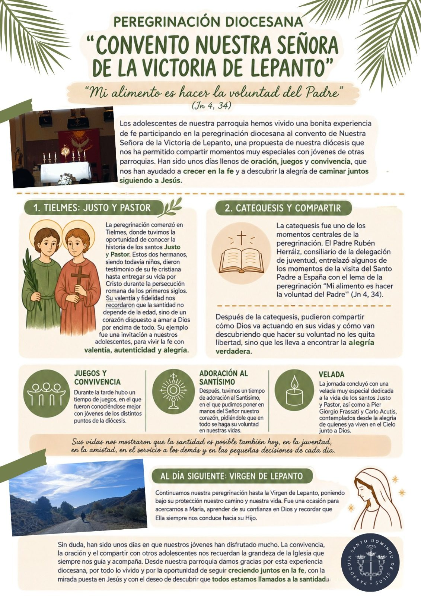

El pasado sábado 17 de octubre, tuvimos reunión del Consejo Pastoral de la parroquia. Además de intercambiar opiniones sobre temas diversos, tuvimos la oportunidad de compartir nuestro deseo de ofrecer a los jóvenes un espacio donde crecer en la fe. Fue una conversación muy interesante, en la que pudimos no sólo recordar otros momentos de la historia de nuestra parroquia en que los jóvenes formaban un grupo más numeroso y activo que ahora, sino también preguntarnos qué debemos hacer para adaptarnos a los rápidos y profundos cambios del mundo en que nos ha tocado vivir y anunciar el Evangelio en un lenguaje adecuado para los jóvenes de ahora, en quienes estos cambios han tenido un fuerte impacto.
Todos los que participamos en esa reunión del Consejo Pastoral salimos de ella con ilusión para buscar nuevos caminos, para poner en marcha iniciativas, para trabajar juntos en la evangelización de los jóvenes.
El fin de semana siguiente a la reunión, los días 24 y 25 de octubre, Dios nos regaló un signo de esperanza en la Peregrinación de Adolescentes organizada por la Delegación de Juventud de nuestra diócesis. Algunos de los adolescentes de nuestra parroquia (dos de un grupo de 3º de Confirmación y tres del grupo de Juveniles) participaron en esta actividad, acompañados por Piedi, responsable del grupo, que nos ha resumido la experiencia en este precioso testimonio.
Padre Charlie, párroco

